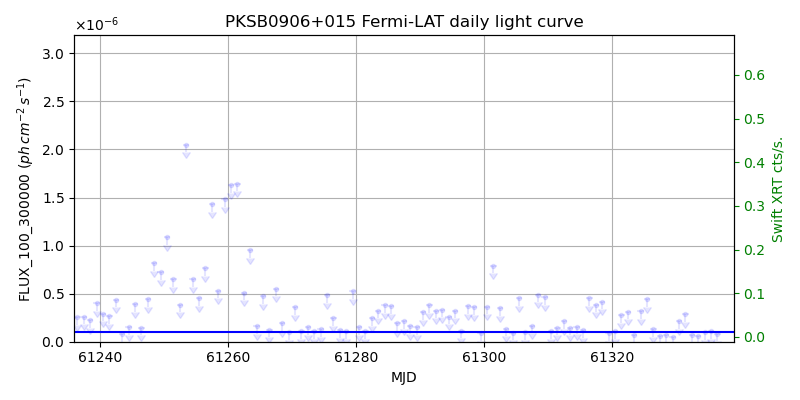
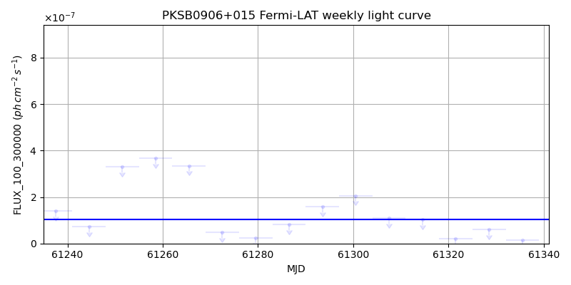
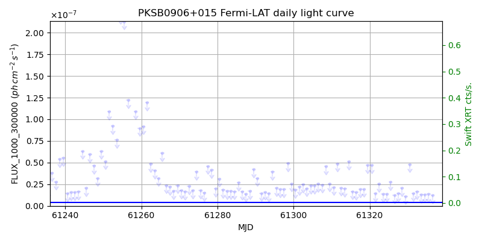
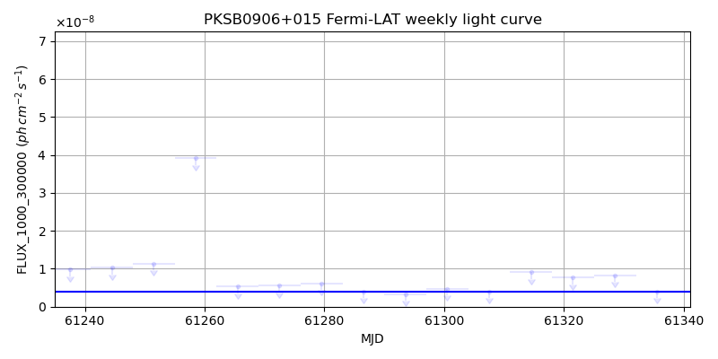

LAT Lightcurve site: https://fermi.gsfc.nasa.gov/ssc/data/access/lat/msl_lc/source/PKS_B0906p015
Swift site: https://www.swift.psu.edu/monitoring/source.php?source=PKSB0906+015
NED: Query
Time of last update of this page: UT: 2026-10-24 15:20 (MJD: 61337.639)
| Property | Value |
|---|---|
| R.A. | 9:09:10.08 |
| Dec. | 1:21:36.0 |
| z | 1.023 |
| 3FGL SpectrumType | LogParabola |
| 3FGL PL Index | |
| 3FGL Flux_100_300000 | 1.03e-07 1 / (s cm2) |
| 3FGL Flux_1000_300000 | 4.01e-09 1 / (s cm2) |
| 3FGL Flux >200 GeV | 2.34e-13 1 / (s cm2) |
| 3FGL Extrap. Crab >200 GeV | 0.00 |
| 3FGL Flux After EBL Absorption >200GeV | 4.49e-15 1 / (s cm2) |
| 3FGL EBL Crab Fraction >200GeV | 0.00 |

| MJD | dMJD | Flux | dFlux | Frac3FGL | FracCrab>200GeV | EBLFracCrab>200GeV |
|---|---|---|---|---|---|---|
| 61332.50 | 0.50 | 6.81e-08 | 0.00e+00 | 0.00 | 0.00 | 0.00 |
| 61333.50 | 0.50 | 5.67e-08 | 0.00e+00 | 0.00 | 0.00 | 0.00 |
| 61334.50 | 0.50 | 1.02e-07 | 0.00e+00 | 0.00 | 0.00 | 0.00 |
| 61335.50 | 0.50 | 1.13e-07 | 0.00e+00 | 0.00 | 0.00 | 0.00 |
| 61336.50 | 0.50 | 8.42e-08 | 0.00e+00 | 0.00 | 0.00 | 0.00 |

| MJD | dMJD | Flux | dFlux | Frac3FGL | FracCrab>200GeV | EBLFracCrab>200GeV |
|---|---|---|---|---|---|---|
| 61300.50 | 3.50 | 2.06e-07 | 0.00e+00 | 0.00 | 0.00 | 0.00 |
| 61307.50 | 3.50 | 1.09e-07 | 0.00e+00 | 0.00 | 0.00 | 0.00 |
| 61314.50 | 3.50 | 1.03e-07 | 0.00e+00 | 0.00 | 0.00 | 0.00 |
| 61321.50 | 3.50 | 2.15e-08 | 0.00e+00 | 0.00 | 0.00 | 0.00 |
| 61328.50 | 3.50 | 6.03e-08 | 0.00e+00 | 0.00 | 0.00 | 0.00 |

| MJD | dMJD | Flux | dFlux | Frac3FGL | FracCrab>200GeV | EBLFracCrab>200GeV |
|---|---|---|---|---|---|---|
| 61332.50 | 0.50 | 1.67e-08 | 0.00e+00 | 0.00 | 0.00 | 0.00 |
| 61333.50 | 0.50 | 1.30e-08 | 0.00e+00 | 0.00 | 0.00 | 0.00 |
| 61334.50 | 0.50 | 1.33e-08 | 0.00e+00 | 0.00 | 0.00 | 0.00 |
| 61335.50 | 0.50 | 1.35e-08 | 0.00e+00 | 0.00 | 0.00 | 0.00 |
| 61336.50 | 0.50 | 1.21e-08 | 0.00e+00 | 0.00 | 0.00 | 0.00 |

| MJD | dMJD | Flux | dFlux | Frac3FGL | FracCrab>200GeV | EBLFracCrab>200GeV |
|---|---|---|---|---|---|---|
| 61300.50 | 3.50 | 4.77e-09 | 0.00e+00 | 0.00 | 0.00 | 0.00 |
| 61307.50 | 3.50 | 4.07e-09 | 0.00e+00 | 0.00 | 0.00 | 0.00 |
| 61314.50 | 3.50 | 9.20e-09 | 0.00e+00 | 0.00 | 0.00 | 0.00 |
| 61321.50 | 3.50 | 7.66e-09 | 0.00e+00 | 0.00 | 0.00 | 0.00 |
| 61328.50 | 3.50 | 8.27e-09 | 0.00e+00 | 0.00 | 0.00 | 0.00 |
--------------------------------------------------------- Using user-supplied coords: 9:09:10.08 1:21:36.0 2000 --------------------------------------------------------- FLWO UT night of: 2026-10-25 Local Sid. @ Midnight: 01:50 Sunset (-15.0) (local, UT): 18:49 01:49 Sunrise (-15.0) (local, UT): 05:27 12:27 Moonrise (local, UT): Moonset (local, UT): Moon phase: 0.99 --------------------------------------------------------- AzTime LSID UT Obj_el Obj_az Mn_el Mn_az Sep. --------------------------------------------------------- 18:49 20:39 01:49 -56.2 345.8 26.2 94.5 121.8 19:19 21:09 02:19 -57.1 359.5 32.4 98.6 121.5 19:49 21:39 02:49 -56.4 13.1 38.6 103.2 121.3 20:19 22:09 03:19 -54.2 25.8 44.7 108.4 121.1 20:49 22:39 03:49 -50.9 36.9 50.6 114.6 120.9 21:19 23:09 04:19 -46.6 46.3 56.2 122.3 120.7 21:49 23:39 04:49 -41.7 54.3 61.2 132.2 120.5 22:19 00:09 05:19 -36.3 61.0 65.5 145.3 120.3 22:49 00:39 05:49 -30.5 66.8 68.4 162.2 120.2 23:19 01:10 06:19 -24.6 71.9 69.4 182.2 120.0 23:49 01:40 06:49 -18.4 76.6 68.2 202.0 119.8 00:19 02:10 07:19 -12.1 80.9 65.1 218.6 119.6 00:49 02:40 07:49 -5.5 84.9 60.8 231.3 119.5 01:19 03:10 08:19 1.0 88.9 55.7 240.9 119.3 01:49 03:40 08:49 7.1 92.9 50.1 248.5 119.1 02:19 04:10 09:19 13.5 96.9 44.3 254.6 118.9 02:49 04:40 09:49 19.8 101.2 38.2 259.8 118.7 03:19 05:10 10:19 26.0 105.8 32.1 264.4 118.5 03:49 05:40 10:49 32.0 110.8 26.0 268.5 118.2 04:19 06:10 11:19 37.9 116.6 19.9 272.4 118.0 04:49 06:40 11:49 43.4 123.3 13.8 276.2 117.7 05:19 07:11 12:19 48.5 131.2 7.8 279.9 117.5 05:27 07:18 12:27 49.8 133.5 6.2 280.9 117.4 --------------------------------------------------------- Moon up all night, no dark time. Dark hours >55 deg.: 0.00